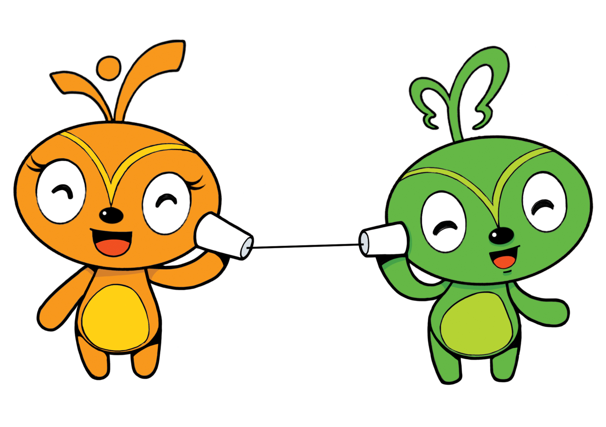

Staropia
서비스 소개
창업에 필요한 정보

'희망이와 드림이'가 알려주는 창업에 꼭 필요한 정보!
산재예방 매뉴얼
창조기업 실태조사 결과보고서
창업지원포털
산재 지정 병원 목록
4대 보험료 간편 계산기
고용보험 홈페이지
고용조사 분석시스템
4대 사회보험 통합 정보 코너
생활법령정보
혁신의 숲 : 스타트업 회사 및 투자사에 대한 정보
스타트업 위클리 : 창업과 관련된 국내 뉴스 기사 구독 서비스